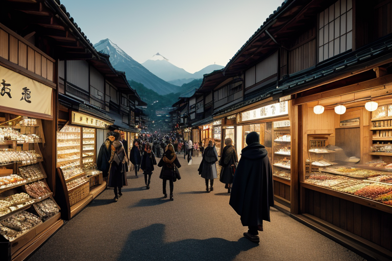
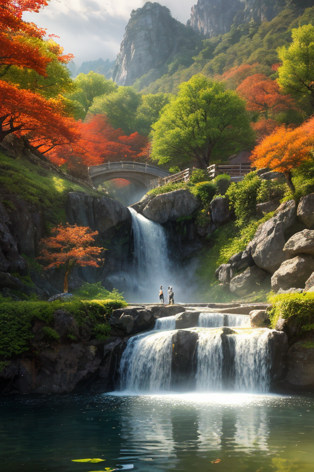
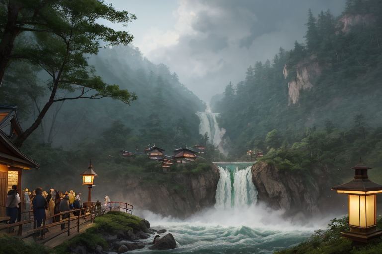
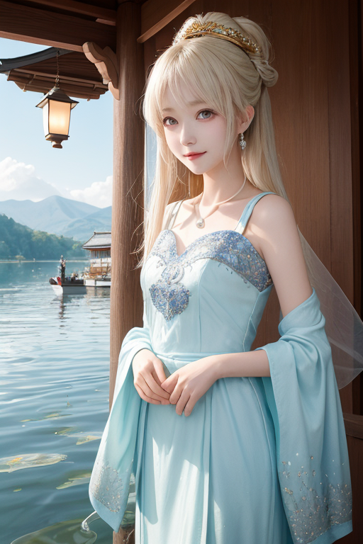
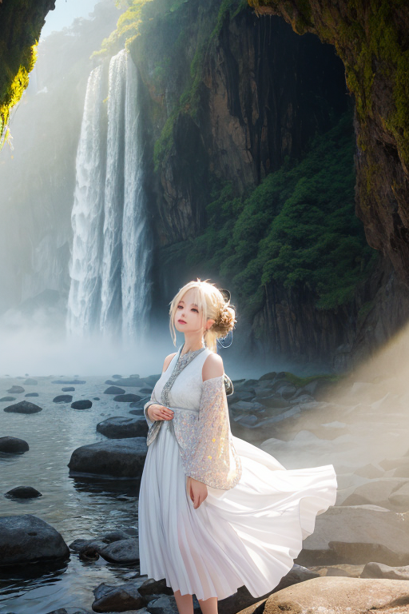

第一章 現実の栃木
あなたはまだ気づいていない。この土地にも、王がいることを。
日光街道の宿場町、今は観光客で埋まる通り。日光彫りの店先で職人の鑿の音が響き、湯葉料理の店からは湯気と笑い声が漏れる。土産物屋の店員が「いちご大福、いかがですかー」と声を張り上げ、家族連れが餃子の看板を目指して流れていく。金の流れ、人の流れ。活気という名のざわめきが、この町の空気を満たしている。
そのざわめきの底で、微かな歪みが脈打っていた。観光バスの排気ガスが山肌を僅かに蝕み、増えすぎた車両の振動が古い地盤に伝わる。欲望と経済の奔流が、この霊峰のふもとに無自覚な負荷をかけ続けている。
トチギア・セラフィムは、その歪みを感知していた。深紫の外套を纏い、人混みの影に立つ。彼の目には、賑わいの色彩の下に、土地がかすかに軋む青白い輪郭が見える。守護王の義務は、この軋みを調整することだ。しかし、目の前の笑顔や熱気は、単なる「守るべき対象」以上の何かを感じさせた。忠誠心だけで規定されていた彼の内側に、初めて疑問が芽生える。この喧噪そのものも、守るべき「何か」なのだろうか。

第二章 歪みの兆候
華厳の滝の轟音は、観光客の歓声に掻き消されそうだった。トチギアは滝壺近くの岩陰に立ち、水しぶきに混じる微かな地鳴りを聞き分けていた。歪みは確かに増している。しかし、それ以上に彼の注意を引いたのは、柵を越えようとする若者を、見知らぬ中年の男性がそっと腕を引いて止める光景だった。一瞬の、取るに足らない介入。
中禅寺湖の湖畔では、湯葉を味わう列が延び、いちご農園の直売所は家族連れで溢れていた。活気は本物だ。だが、トチギアの目には、過剰な期待が土地に負わせる無理な緊張も映る。足利学校の静寂な庭とは対照的な、この欲望の密度。セラフィナが結界の微調整を報告する声に、彼はうなずきながらも考えていた。守るべきは、この土地の物理的均衡か。それとも、あの男性が示した、無償のわずかな気遣いのほうか。彼にはまだ、答えが出せなかった。

第三章 王の葛藤
華厳の滝の轟音は、観光客の歓声に消されそうだった。トチギアは人混みの影に立ち、流れ落ちる水の力を微かに調整する。水量を百分の一減らし、岩への衝撃を分散させる。これが彼の義務だ。しかし、視線の先では、柵を越えて記念写真を撮ろうとする若者たちがいた。セラフィナが警告の波動を送る。「危険です。制止すべきか」。トチギアは躊躇した。規律に従えば、彼らを物理的に引き離せる。だが、その一瞬の「楽しい思い出」を作りたいという欲望そのものを、彼は否定できるのか。
足利学校の静寂な書庫を思い出す。学問は、欲望を昇華させる道を示していた。今、この地に満ちる活気も、人を豊かにする欲望の表れだ。歪みを生むのもまた、その欲望の暴走である。彼はため息をついた。守るべきは、物理的な均衡だけではない。この土地で生きる人々の、歪みに飲み込まれない「生きる歓び」の可能性そのものなのかもしれない。彼はまだ、その重さを測り切れずにいた。

第四章 妖精との対話
中禅寺湖の水面は、観光船の航跡で微かに揺れていた。湖畔の土産物店からは、日光彫りの小刀を手に取る子供の歓声が聞こえる。
「王よ、あなたは『守る』ことの意味を、狭く捉えすぎています」
セラフィナが、王の傍らに静かに現れた。彼女の目は、華厳の滝へと続く人混みを見つめている。
「あの滝も、この湖も、かつては聖域でした。今、人々はその美しさを『商品』として買い求めに来る。それは冒涜でしょうか」
王は答えず、湯葉を供する老舗の店先で、家族連れが笑顔で箸を並べる様子を見つめた。
「歪みは、無からは生まれません。人が集い、何かを求め、何かを生み出そうとする『動き』そのものが、時に歪みを孕むのです。商いとは、人の欲望を形にし、交換し、循環させる営み。日光東照宮の煌びやかな装飾も、かつては権力と富の欲望の結晶でした。しかし、時を経て、それは人々の『美を見たい』という別の欲望を満たすものに変わった。守るべきは、この循環が暴走して歪みとなる瞬間であり、同時に、この循環そのものが生み出す、人々の小さな歓びの数々なのです」
セラフィナの言葉は、冷徹な観察のようでいて、どこか温かかった。王は、餃子の屋台から立ち上る湯気の向こうで、友人同士がビールのグラスを合わせる様を見た。

第五章 微調整と余韻
華厳の滝を見上げる観光客の群れの端で、王は微かに手を動かした。滝壺に立ち上る水煙が、ほんの少しだけ風向きを変え、日差しに虹を架けた。それは、滑りやすい岩場に近づきすぎた子供の目を一瞬引きつけるのに十分な光だった。母親が子供の手を引く。誰も気づかない調整だ。
日光彫りの工房前では、熟練職人の手元を掠める木屑の飛散が、隣の見学者の目に入らない角度へと僅かに逸れた。足利学校の史跡では、強い日差しが急に雲に遮られ、古文書を熱心に写す学生の紙面が、かすかな影となった。それはほんの数分の恵みに過ぎない。
歪みは完全には消せない。しかし、欲望と活気の奔流が無自覚の破壊へと向かうその一歩手前で、王は無数の「ほんの少し」を積み重ねる。守るべきものは、この地の霊峰の威容そのものではなく、その下で営まれる、気づかれないほどの小さな安全と、偶然の余白なのだ。王の深紫の翼は、誰にも見えず、今日も微かに震える。
あなたの町にも、王がいる。